Simul
Cloud Storage App
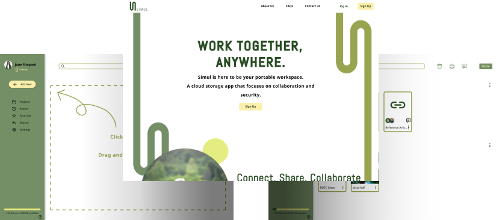
The project was to create a cloud storage app that could stand in the current market. Simul is a cloud storage app specially designed for project based work where students and professionals could collaborate seamlessly.
Desktop Prototype
Mobile Prototype
Roles
UX Design, Visual Design, Branding
Deliverables
User Survey, Competitive Analysis, User personas, user stories, user flows, wireframes, branding guide, prototype
Specs
Duration: 4 Weeks
Tools: Pen & Paper, Figma, Adobe Illustrator, Adobe Photoshop, Usability Hub
Problem
Cloud storage app is a saturated market, but rarely do products go beyond simple storage. Nowadays students and young professionals make more collaborative content and need tools to help them along the way while still maintaining the basic features of a cloud drive.
Solution
Simul is a cloud storage app giving users the freedom to organize and save their content remotely. Beyond that, Simul makes collaborative efforts more seamless by introducing new organizational features and sharing capabilities.
Process
User Survey
I created a user survey that took a preliminary look at the market and its users to find my target audience. I wanted to prioritize features that users thought were important or missing in the current market. I recruited users through social media, friends and family, and subreddits.
82%
of users use their current app to collaborate on projects and assignments
53%
are unsatisfied with their current cloud storage product
40%
are willing to switch their main cloud storage app for additional features
82%
of users use their current app to collaborate on projects and assignments
With these findings, I was able to put together some initial concepts for the project. It seemed important to center the project around the idea of collaboration.
Full Survey Analysis

Competitive Analysis
From the survey, I also found that the two biggest competitors in the market are Google Drive and Dropbox. I examined Google Drive alongside Evernote which targets itself to a more niche audience. I wanted to see what both sides were lacking and thriving and where the findings could apply to the project.
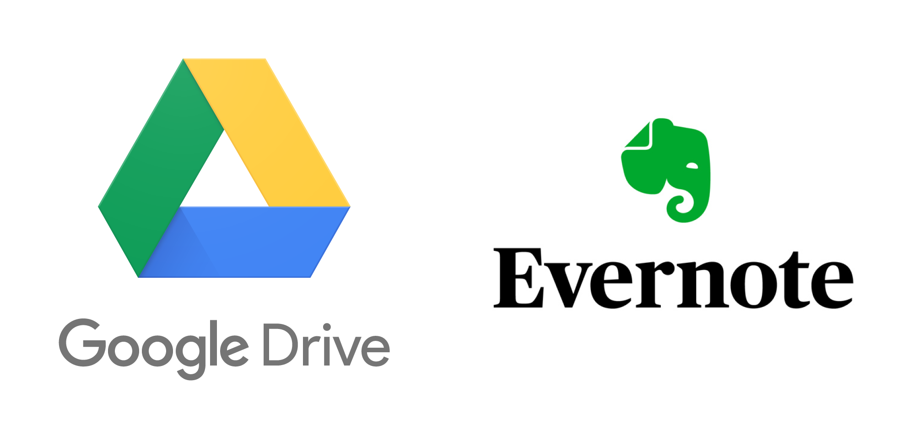
While Google Drive simplifies itself as a cloud drive, it doesn’t offer any additional features that could be useful for a specific task. On the other hand, niche products Evernote compromised basic organizational features that users are accustomed to with servicing the needs of a more niche market.
Full Analysis
User Personas
I chose two key participants from the survey to ask more specific questions so that I can flesh out a more detailed user personas. I kept returning to these personas when editing and adding features to the project.
Iris
28 | Designer | Female
Motivation
As a freelance designer, Iris needs to communicate and share files with her clients remotely. She needs to organize each project for her clients and make sure the files don’t mix up.
Frustration
It’s hard to keep track of projects especially if they are going on at the same time. She also needs to choose level of access for different types of clients.
David
20 | Student | Male
Motivation
David is a student leading a busy lifestyle. He has multiple courses in universtiy to finish up his studies. He also likes to take the lead in club activities and help out.
Frustration
He needs to distinguish documents and projects separately from his school and club events.
“I like to stay organized to keep up with my hectic schedule”
User Stories and Flows
I prioritized tasks keeping in mind the input I gained from the survey and user personas I created. While it seemed basic to any cloud storage app it was important to keep the priority in mind to avoid the pitfalls of the other competitors. The user flows helped to visualize the path that users take to complete the tasks and map out all the possible options so that users can have multiple paths to completing one task.
I want to share text documents with other people using a link
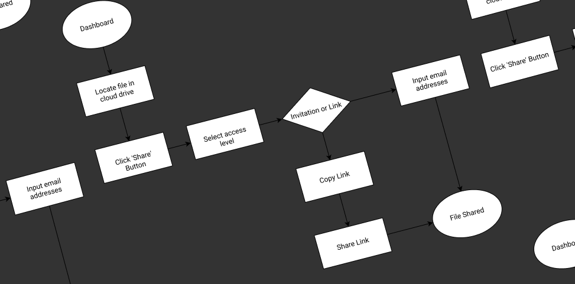
I want to access a file that is shared with me from another user
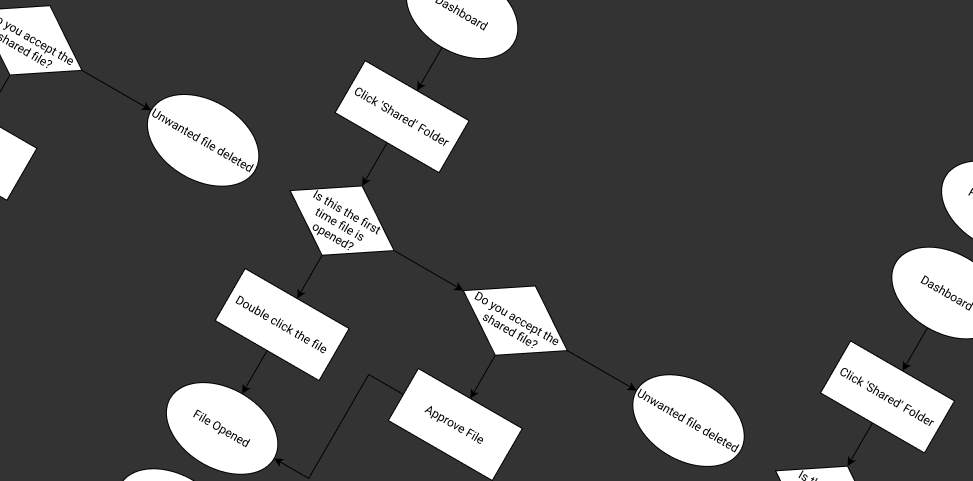
I want to upload local files to the cloud drive
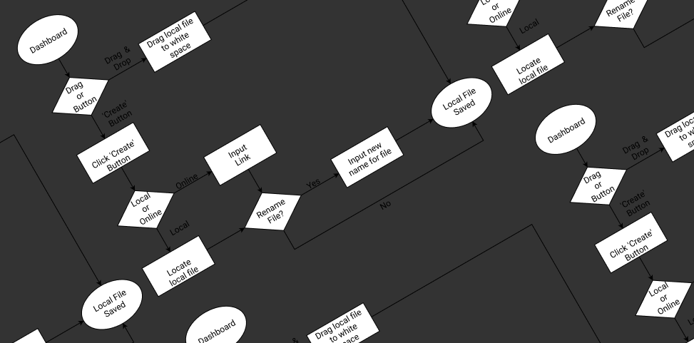

Wireframes
Since I got the information architecture in place, it was time for me to move on to visually structuring the information. I first tested out the landing page and dumped all my ideas down on pen and paper of how to display the organization of files in the project.
I filtered through the options asking friends of their opinions. I took the best ideas then transferred them to high-fidelity wireframes.
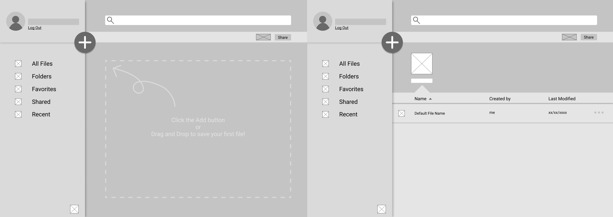
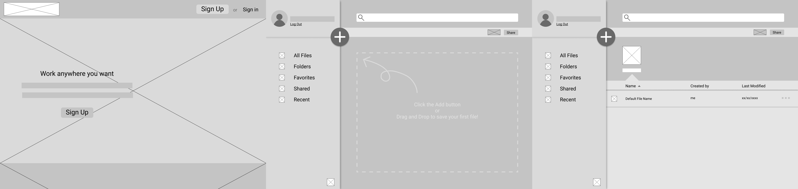
Unfortunately this is where my biggest mistakes were made. I glossed over this stage since it was a direct transcript from sketches. I didn’t account for sizing of elements which would later cost time in the later stages.
Branding
I first chose a number of different words and found translation of those words in different languages. Afterwards, I played around with different concepts of logos with those words.
Most competitors bring a professional yet cold atmosphere when it comes to branding. I wanted the brand to be simple and calming, akin to the popular cafes that students and professionals frequent to complete their work. I took cues from them drew inspiration from nature.
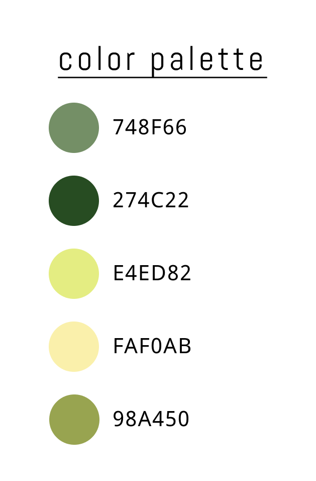
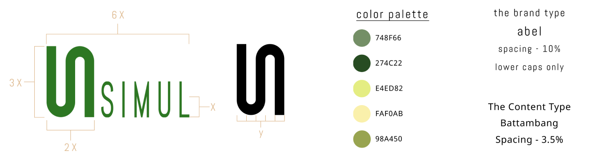
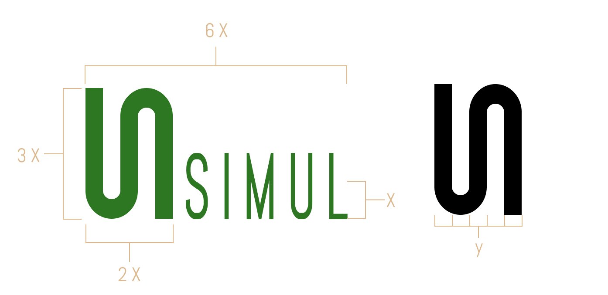
Branding Guide
Mock Ups and Testing
Drawing from the wireframes and the newly created branding guide, I first applied the color palette to the wireframes.
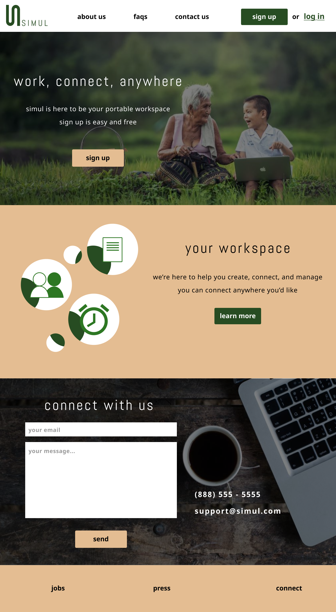
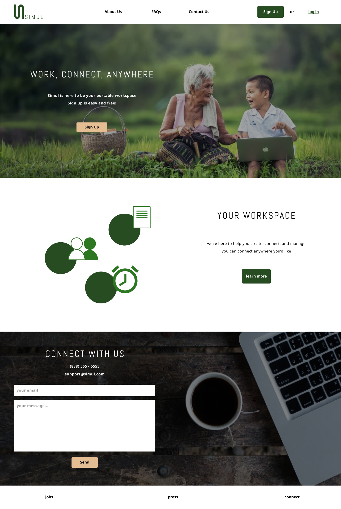
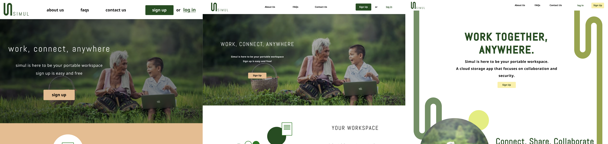
This is where the cost of skimming the wireframes comes in. From the first user testing I conducted I realized everything was sized too big. Many participants said everything was “too busy and hectic”. I realized I didn’t take in typescale into my high fidelity wireframes. After applying the necessary adjustments, I conducted another test alongside a preference test to test out the visual designs.
The biggest takeaway from the testing was to apply key colors sparingly. Another takeaway from the testings were to keep in mind the important features that should be prioritized when the project goes into development and that couldn’t be applied in the prototype.
Test Analysis
Desktop Prototype
Mobile Prototype
What I learned
It might be useful to conduct another in depth survey after an initial general survey. The initial survey did bring insight for the general landscape of the market but another survey might be a good idea to test out the hypotheses made from the initial data.
Set a good foundation - the biggest cost to the time frame was redoing the high fidelity mockup because I wasn’t detailed enough in the wireframes.
It’s not a one way street - Branding guides are not set in stone. It is completely acceptable and sometimes necessary to deviate from the branding guide but it is important to go back and update the branding guide to stay consistent. By making sure to update any changes to the branding guide, I have to think twice from deviating from the guidelines to make sure it’s a good decision.
Do branding before high fidelity mockups but after lo-fidelity mockups. There will be less time going back and forth and you can refine the branding guide more smoothly.